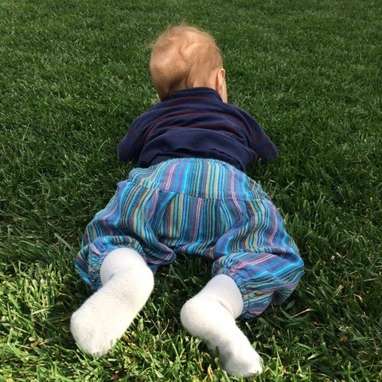
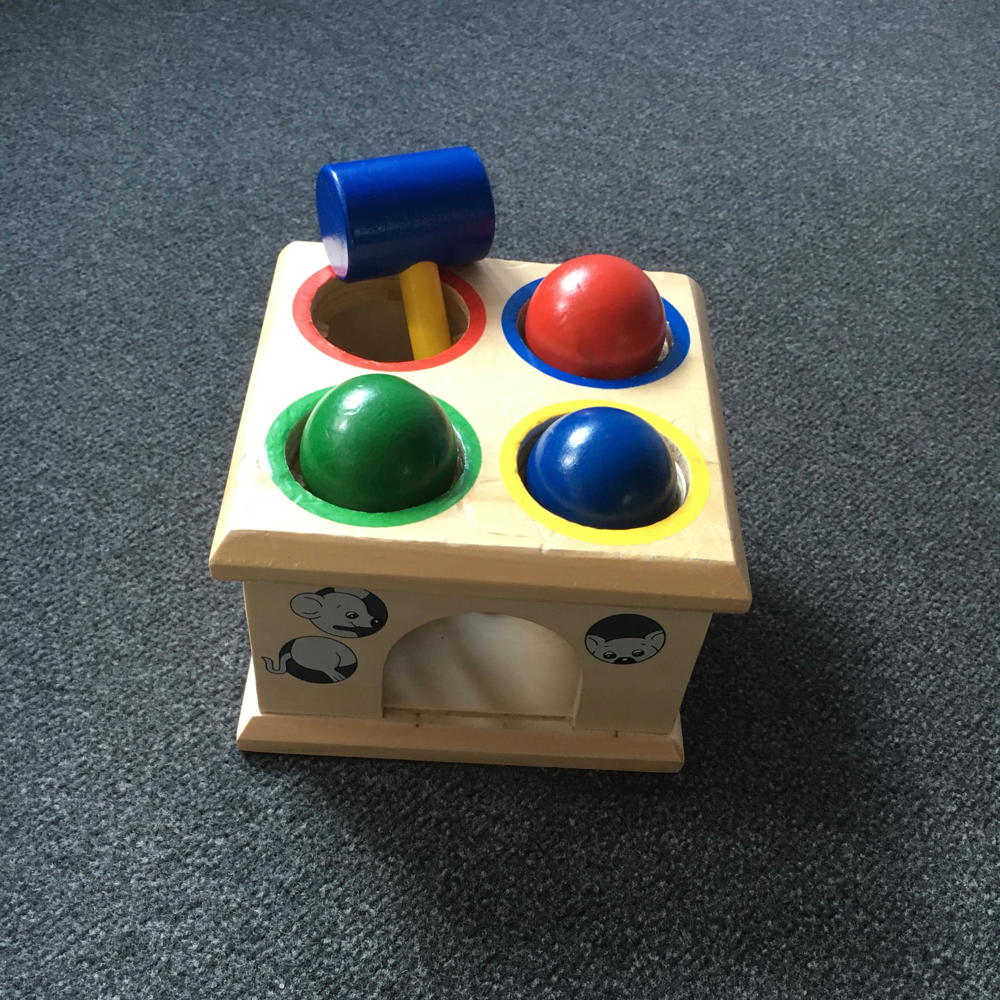
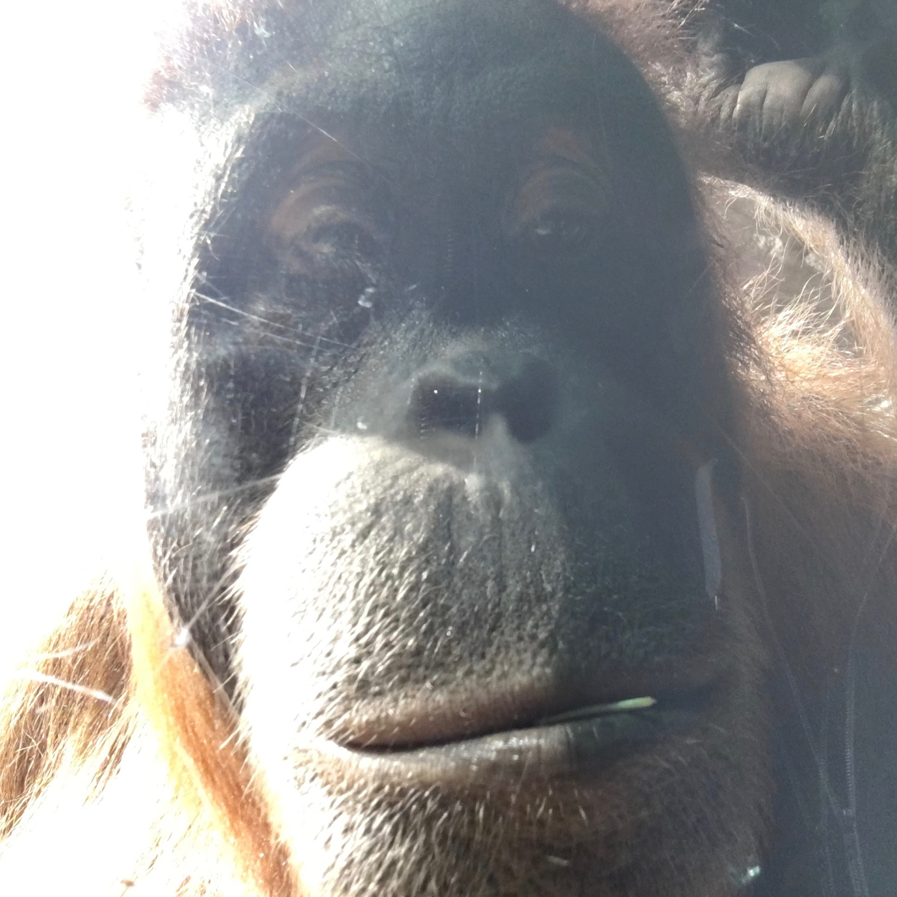

|  |  |  |
Manuel Bohn |
|
|
Marie Skłodowska-Curie Fellow
Language and Cognition Lab, Stanford University & |
|
Links: |
|
Publications:Bohn, M., Allritz, M., Call, J., & Völter, C. J. (2017). Information seeking about tool properties in great apes. Scientific Reports, 7(1), 10923. Schmelz, M., Duguid, S., Bohn, M., & Völter, C. (2017). Individual and cooperative problem solving in giant otters (Pteronura brasiliensis) and Asian small-clawed otters (Aonyx cinerea). Animal Cognition 20: 1107. Bohn, M., Call, J., & Tomasello, M. (2016). The role of past interactions in great apes' communication about absent entities. Journal of Comparative Psychology, 130(4), 351-357. Bohn, M., Call, J., & Tomasello, M. (2016). Comprehension of iconic gestures by chimpanzees and human children. Journal of Experimental Child Psychology, 142, 1-17. Bohn, M., Call, J., & Tomasello, M. (2015). Communication about absent entities in great apes and human infants. Cognition, 145, 63-72. Stieger, S., Burger, C., Bohn, M., & Voracek, M. (2013). Who commits virtual identity suicide? Differences in privacy concerns, Internet addiction, and personality between Facebook users and quitters. Cyberpsychology, Behavior, and Social Networking, 16(9), 629-34 |
|